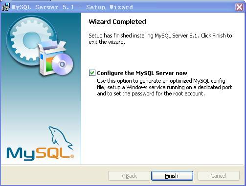
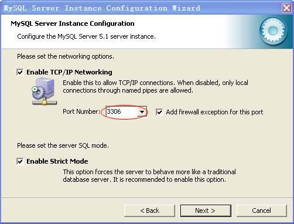
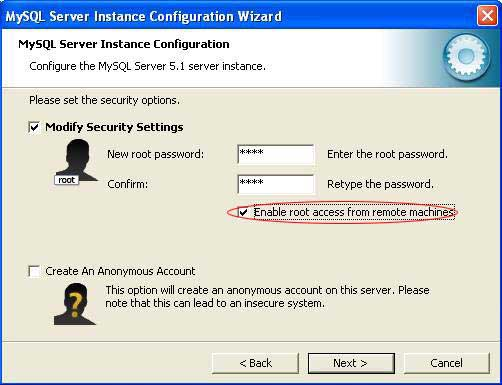
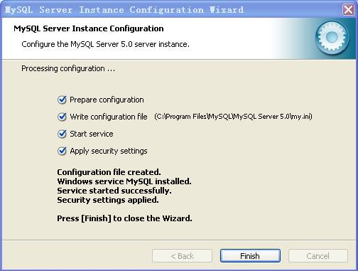

Database Installation
1.Select to install MySQL Server 5.1, the following interface pops up.

2. Click [Next] in every step, the software will be installed in the in [Program Files] fold under the system disk. Tick [Configure the MySQL Server now] in the final interface, showing as below, and click [Finish].

3. The configuration interface pops up, click [Next] in every step until the following interface appears. Click “” to select the database storing directory, and click [Next].

4. Until the following interface appears, you can see the database port number is 3306 (or select other port number). Tick [Add firewall exception for this port], to enable other computers to access this database through internet.

5. Click [Next], the following interface appears, select [Manual Selected Default Character Set/Collation], and select the server language coding as [utf8] in the [Character Set] down drop menu.

6. In the security setting interface, set the security password of user [root]. If there is no password, keep the [Current root password] field empty. Tick [Enable root access from remote machines], to enable other computers to access this database through internet.

7. In the following interface, click [Execute], and the system will execute the configuration automatically. If all the four items pass through, as following, the installation complete. Click [Finish] to end the installation.
